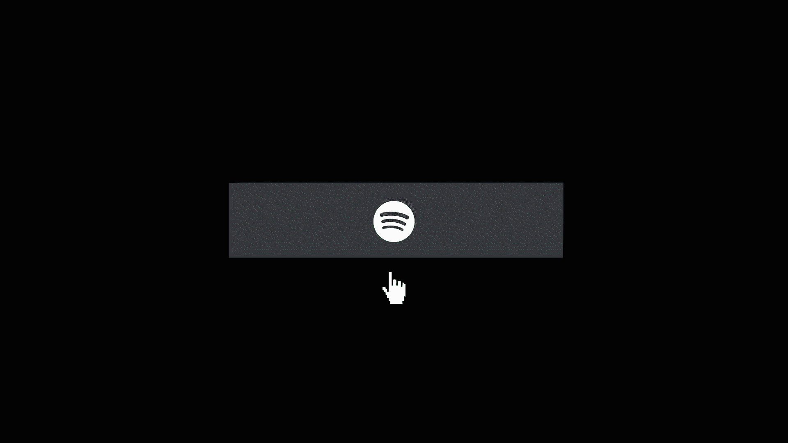

URL to the original interface you wish to improve:
James Cliff - Personal Website
TRIGGERS:
The trigger will occur when the user hovers over the social media buttons in the "Portfolio" card section towards the top of the website.
RULES:
On each hover, the social media icon will change color along with a few animations. As of now, there are two elements in the button: a logo and the name of the app next to it.
- One animation will have the name of the app slide in from the right and line up next to the logo when you hover over the button.
- The next animation will shake the logo and name after the slide animation.
- The next animation will fade the logo color from white to the corresponding color palette of the app.
- The last animation will fade in a colored border around the box, also following the color palette of the app.
FEEDBACK:
Upon hovering over each button box:
- the name of the app will slide in from right side of the button and sit next to the app logo
- the color of the logo will change from white to its corresponding color palette
- a colored border, also corresponding to the color palette of the app, will appear around the outer edge of the button
LOOPS & MODES:
Modes: Clicking one one of these logos will open a new tab and bring you to that specific link.
Microinteraction Example:
